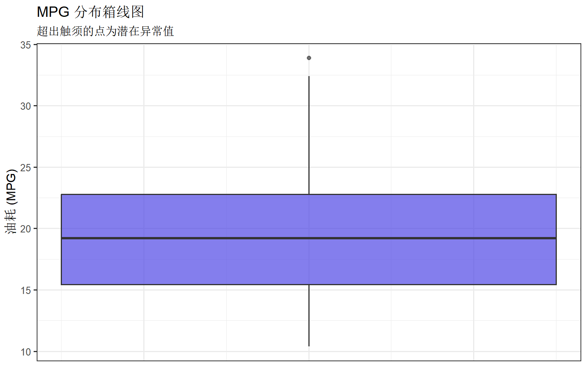
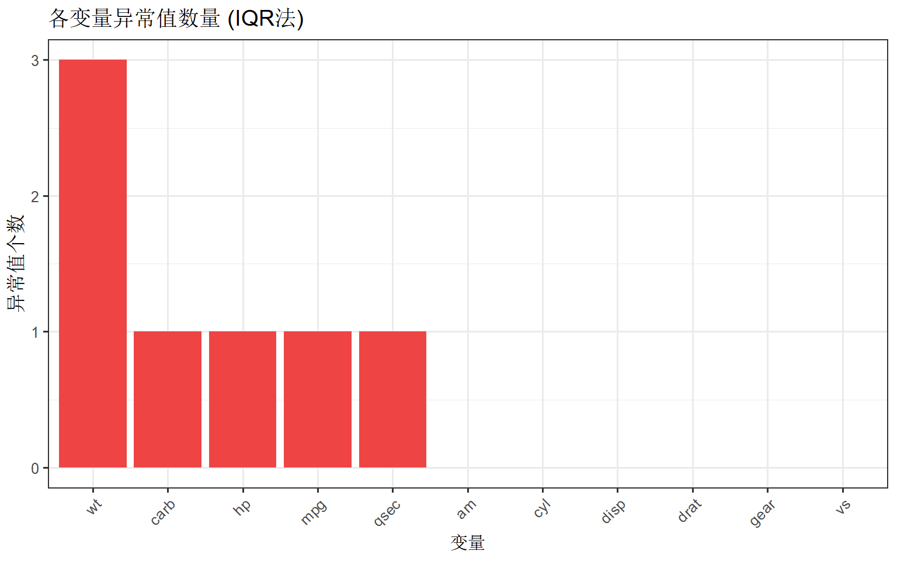
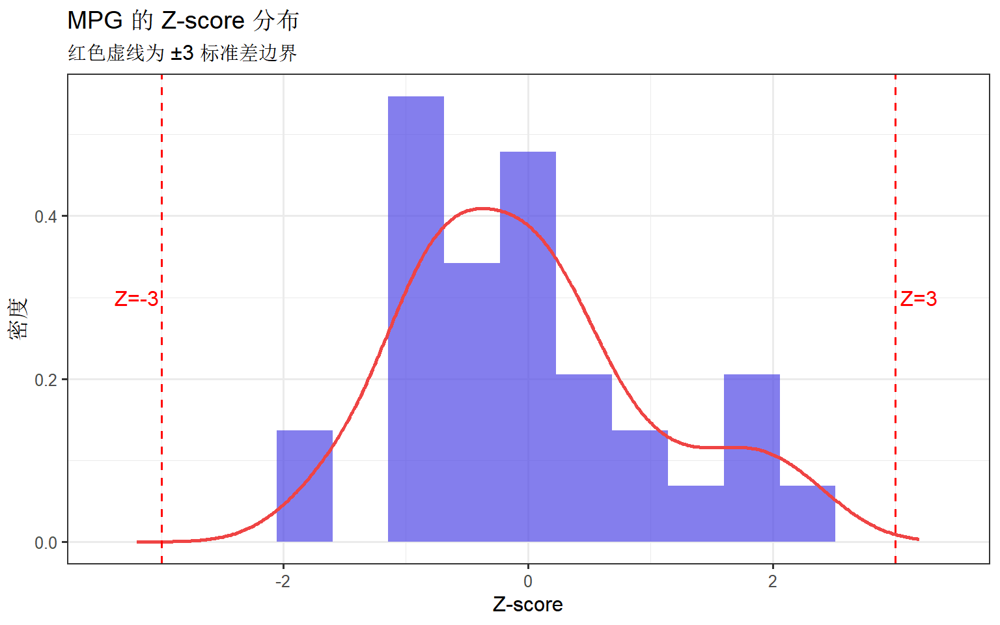
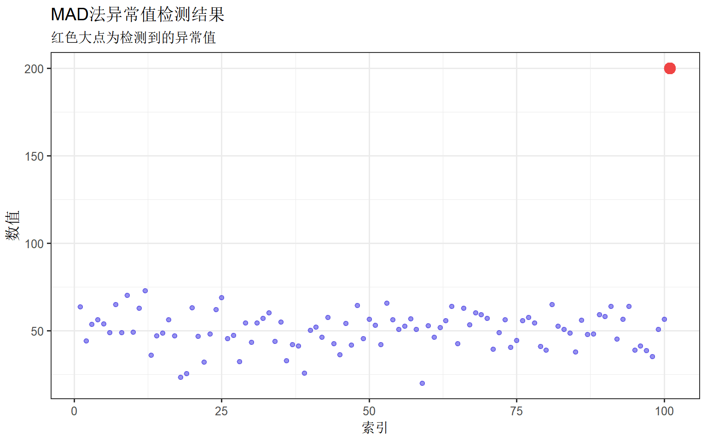
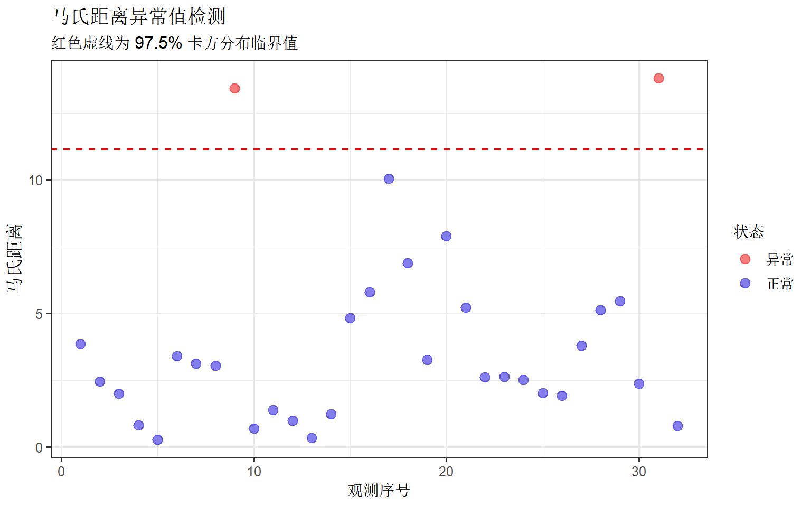
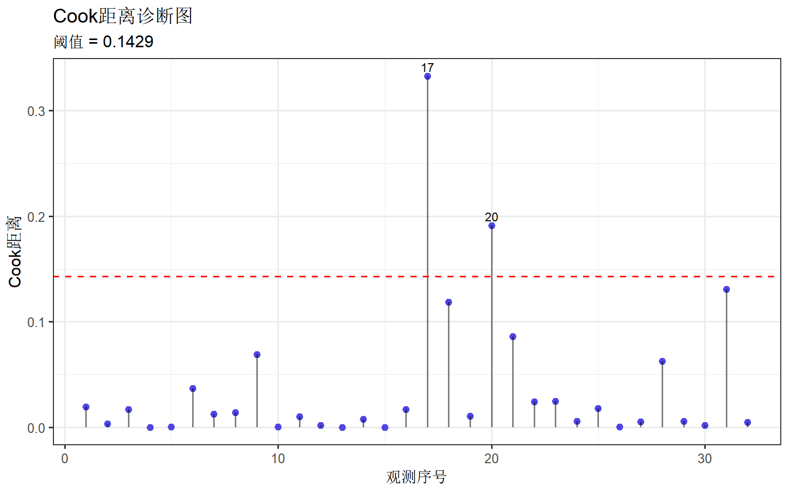
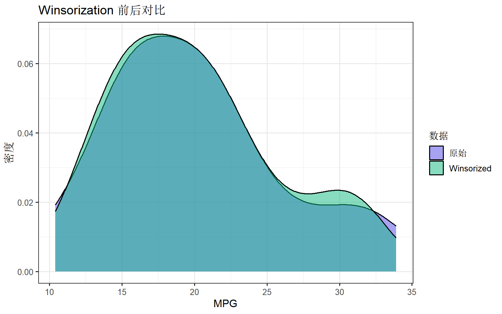
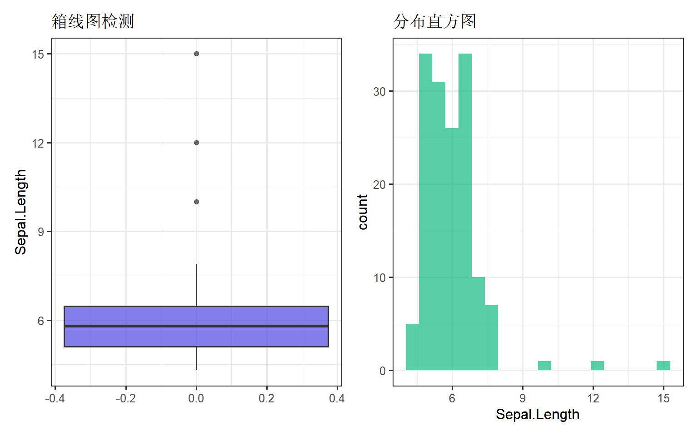

# 核心包
library(dplyr)
library(ggplot2)
library(tidyr)
# 异常值检测专用包
library(outliers) # Grubbs检验、Dixon检验
# 可视化主题设置
theme_set(theme_bw(base_size = 12))异常值检测与处理完全指南
R语言方法
数据预处理
异常值
异常值概述
异常值（Outlier）是指明显偏离其他观测值的数据点，可能由测量误差、数据录入错误或真实的极端情况造成。正确识别和处理异常值对数据分析质量至关重要。
异常值的类型
| 类型 | 说明 | 示例 |
|---|---|---|
| 单变量异常值 | 单个变量中的极端值 | 年龄=200岁 |
| 多变量异常值 | 多变量组合下的异常 | 身高150cm但体重120kg |
| 条件异常值 | 特定条件下的异常 | 夏天气温-10°C |
异常值的影响
异常值会严重影响统计分析结果：
- 均值偏移：极端值拉动均值
- 方差膨胀：增大数据离散程度
- 回归扭曲：影响回归系数估计
- 聚类干扰：影响聚类算法效果
安装与加载
第一部分：箱线图法 (IQR法)
箱线图法是最常用的异常值检测方法，基于四分位距（IQR）判断异常值。
原理说明
IQR法判断标准： - IQR（四分位距）= Q3 - Q1 - 下界 = Q1 - 1.5 × IQR - 上界 = Q3 + 1.5 × IQR - 超出上下界的点视为异常值
1.5倍规则检测温和异常值，3倍规则检测极端异常值。
可视化检测
# 使用内置数据集
data(mtcars)
df <- mtcars
# 箱线图可视化
ggplot(df, aes(y = mpg)) +
geom_boxplot(fill = "#4f46e5", alpha = 0.7, width = 0.3) +
labs(
title = "MPG 分布箱线图",
subtitle = "超出触须的点为潜在异常值",
y = "油耗 (MPG)"
) +
theme(
axis.text.x = element_blank(),
axis.ticks.x = element_blank()
)
编程实现
# IQR法检测函数
detect_outliers_iqr <- function(x, k = 1.5) {
Q1 <- quantile(x, 0.25, na.rm = TRUE)
Q3 <- quantile(x, 0.75, na.rm = TRUE)
IQR <- Q3 - Q1
lower <- Q1 - k * IQR
upper <- Q3 + k * IQR
list(
outliers = which(x < lower | x > upper),
lower_bound = lower,
upper_bound = upper,
values = x[x < lower | x > upper]
)
}
# 检测mpg变量的异常值
result_iqr <- detect_outliers_iqr(df$mpg)
cat("异常值索引:", result_iqr$outliers, "\n")异常值索引: 20 cat("异常值:", result_iqr$values, "\n")异常值: 33.9 cat("边界: [", result_iqr$lower_bound, ",", result_iqr$upper_bound, "]\n")边界: [ 4.3625 , 33.8625 ]多变量批量检测
# 对所有数值变量检测异常值
numeric_vars <- df %>% select(where(is.numeric))
outlier_summary <- sapply(numeric_vars, function(x) {
result <- detect_outliers_iqr(x)
length(result$outliers)
})
# 可视化异常值数量
outlier_df <- data.frame(
variable = names(outlier_summary),
count = outlier_summary
)
ggplot(outlier_df, aes(x = reorder(variable, -count), y = count)) +
geom_col(fill = "#ef4444") +
labs(
title = "各变量异常值数量 (IQR法)",
x = "变量", y = "异常值个数"
) +
theme(axis.text.x = element_text(angle = 45, hjust = 1))
第二部分：Z-score法
Z-score法基于标准化原理，将数据转换为标准正态分布后判断极端值。
原理说明
- Z-score = (x - μ) / σ
- 一般以 |Z| > 3 作为异常值判断标准
- 假设数据近似正态分布
实现方法
# Z-score检测函数
detect_outliers_zscore <- function(x, threshold = 3) {
z_scores <- scale(x)
outliers <- which(abs(z_scores) > threshold)
list(
outliers = outliers,
z_scores = z_scores[outliers],
values = x[outliers]
)
}
# 检测
result_z <- detect_outliers_zscore(df$mpg)
cat("异常值索引:", result_z$outliers, "\n")异常值索引: cat("对应Z分数:", round(result_z$z_scores, 2), "\n")对应Z分数: Z-score分布可视化
# 可视化Z-score分布
df$mpg_zscore <- as.numeric(scale(df$mpg))
ggplot(df, aes(x = mpg_zscore)) +
geom_histogram(aes(y = after_stat(density)),
bins = 15, fill = "#4f46e5", alpha = 0.7
) +
geom_density(color = "#ef4444", linewidth = 1) +
geom_vline(xintercept = c(-3, 3), linetype = "dashed", color = "red") +
annotate("text", x = 3.2, y = 0.3, label = "Z=3", color = "red") +
annotate("text", x = -3.2, y = 0.3, label = "Z=-3", color = "red") +
labs(
title = "MPG 的 Z-score 分布",
subtitle = "红色虚线为 ±3 标准差边界",
x = "Z-score", y = "密度"
)
第三部分：修正Z-score法 (MAD法)
当数据包含异常值时，均值和标准差容易受影响。MAD法使用中位数和中位数绝对偏差，更加稳健。
原理说明
- MAD（中位数绝对偏差）= median(|x - median(x)|)
- 修正Z-score = 0.6745 × (x - median(x)) / MAD
- 0.6745 是正态分布下的修正系数
- 一般以 |修正Z| > 3.5 为异常值标准
实现方法
# MAD法检测函数
detect_outliers_mad <- function(x, threshold = 3.5) {
med <- median(x, na.rm = TRUE)
mad_value <- median(abs(x - med), na.rm = TRUE)
# 避免MAD为0的情况
if (mad_value == 0) {
mad_value <- mean(abs(x - med), na.rm = TRUE)
}
modified_z <- 0.6745 * (x - med) / mad_value
outliers <- which(abs(modified_z) > threshold)
list(
outliers = outliers,
modified_z = modified_z[outliers],
values = x[outliers],
mad = mad_value
)
}
# 检测
result_mad <- detect_outliers_mad(df$mpg)
cat("MAD值:", result_mad$mad, "\n")MAD值: 3.65 cat("异常值索引:", result_mad$outliers, "\n")异常值索引: Z-score vs MAD 对比
# 创建含有极端异常值的数据
set.seed(42)
normal_data <- rnorm(100, mean = 50, sd = 10)
# 添加一个极端异常值
contaminated_data <- c(normal_data, 200)
# 对比两种方法
z_result <- detect_outliers_zscore(contaminated_data)
mad_result <- detect_outliers_mad(contaminated_data)
cat("Z-score法检测到:", length(z_result$outliers), "个异常值\n")Z-score法检测到: 1 个异常值cat("MAD法检测到:", length(mad_result$outliers), "个异常值\n")MAD法检测到: 1 个异常值# 可视化对比
comparison_df <- data.frame(
value = contaminated_data,
index = 1:length(contaminated_data)
)
ggplot(comparison_df, aes(x = index, y = value)) +
geom_point(color = "#4f46e5", alpha = 0.6) +
geom_point(
data = comparison_df[mad_result$outliers, ],
color = "#ef4444", size = 4
) +
labs(
title = "MAD法异常值检测结果",
subtitle = "红色大点为检测到的异常值",
x = "索引", y = "数值"
)
第四部分：统计检验方法
Grubbs检验
Grubbs检验用于检测单个异常值，假设数据服从正态分布。
# 使用outliers包进行Grubbs检验
grubbs_result <- grubbs.test(df$mpg)
print(grubbs_result)
Grubbs test for one outlier
data: df$mpg
G = 2.29127, U = 0.82518, p-value = 0.276
alternative hypothesis: highest value 33.9 is an outlier# 检验最大值
grubbs_max <- grubbs.test(df$mpg, type = 10)
print(grubbs_max)
Grubbs test for one outlier
data: df$mpg
G = 2.29127, U = 0.82518, p-value = 0.276
alternative hypothesis: highest value 33.9 is an outlier# 检验最小值
grubbs_min <- grubbs.test(df$mpg, type = 10, opposite = TRUE)
print(grubbs_min)
Grubbs test for one outlier
data: df$mpg
G = 1.60788, U = 0.91391, p-value = 1
alternative hypothesis: lowest value 10.4 is an outlierDixon Q检验
Dixon检验适用于小样本（n < 25），检测最极端的值是否为异常值。
# 取一个小样本进行Dixon检验
small_sample <- df$mpg[1:20]
dixon_result <- dixon.test(small_sample)
print(dixon_result)
Dixon test for outliers
data: small_sample
Q = 0.17857, p-value = 0.7119
alternative hypothesis: highest value 33.9 is an outlier卡方检验法
基于卡方分布检测多变量中的异常值。
# 卡方检测函数
detect_outliers_chisq <- function(x, alpha = 0.05) {
# 计算卡方统计量门槛值
threshold <- qchisq(1 - alpha, df = 1)
# 使用标准化后的平方作为卡方统计量
z_squared <- scale(x)^2
outliers <- which(z_squared > threshold)
list(
outliers = outliers,
chi_squared = z_squared[outliers],
values = x[outliers]
)
}
result_chisq <- detect_outliers_chisq(df$mpg)
cat("卡方检验异常值:", result_chisq$outliers, "\n")卡方检验异常值: 18 20 第五部分：多变量异常值检测
马氏距离法
马氏距离考虑了变量间的相关性，适用于多变量异常值检测。
# 马氏距离计算
calc_mahalanobis <- function(data) {
center <- colMeans(data)
cov_matrix <- cov(data)
mahal_dist <- mahalanobis(data, center, cov_matrix)
# 卡方分布临界值
threshold <- qchisq(0.975, df = ncol(data))
outliers <- which(mahal_dist > threshold)
list(
distances = mahal_dist,
outliers = outliers,
threshold = threshold
)
}
# 选择多个变量进行分析
multi_vars <- df %>% select(mpg, hp, wt, qsec)
mahal_result <- calc_mahalanobis(multi_vars)
cat("马氏距离阈值:", round(mahal_result$threshold, 2), "\n")马氏距离阈值: 11.14 cat("多变量异常值索引:", mahal_result$outliers, "\n")多变量异常值索引: 9 31 马氏距离可视化
# 可视化马氏距离
df$mahal_dist <- mahal_result$distances
df$is_outlier <- ifelse(df$mahal_dist > mahal_result$threshold, "异常", "正常")
ggplot(df, aes(x = 1:nrow(df), y = mahal_dist, color = is_outlier)) +
geom_point(size = 3, alpha = 0.7) +
geom_hline(
yintercept = mahal_result$threshold,
linetype = "dashed", color = "red"
) +
scale_color_manual(values = c("正常" = "#4f46e5", "异常" = "#ef4444")) +
labs(
title = "马氏距离异常值检测",
subtitle = "红色虚线为 97.5% 卡方分布临界值",
x = "观测序号", y = "马氏距离", color = "状态"
)
Cook距离法
Cook距离用于回归诊断，识别对模型影响较大的观测点。
# 拟合回归模型
model <- lm(mpg ~ hp + wt + qsec, data = df)
# 计算Cook距离
cook_dist <- cooks.distance(model)
# 可视化
plot_df <- data.frame(
index = 1:length(cook_dist),
cook_distance = cook_dist
)
# Cook距离阈值：4/(n-k-1)
threshold_cook <- 4 / (nrow(df) - length(coef(model)))
ggplot(plot_df, aes(x = index, y = cook_distance)) +
geom_point(color = "#4f46e5", size = 2) +
geom_segment(aes(xend = index, yend = 0), alpha = 0.5) +
geom_hline(
yintercept = threshold_cook,
linetype = "dashed", color = "red"
) +
geom_text(
data = plot_df %>% filter(cook_distance > threshold_cook),
aes(label = index), vjust = -0.5, size = 3
) +
labs(
title = "Cook距离诊断图",
subtitle = paste("阈值 =", round(threshold_cook, 4)),
x = "观测序号", y = "Cook距离"
)
第六部分：异常值处理策略
检测到异常值后，需要根据具体情况选择合适的处理方式。
策略一：删除异常值
适用于明确的数据错误或对分析影响极大的极端值。
# 删除异常值
df_clean <- df
outlier_idx <- detect_outliers_iqr(df_clean$mpg)$outliers
if (length(outlier_idx) > 0) {
df_no_outliers <- df_clean[-outlier_idx, ]
cat("删除前行数:", nrow(df_clean), "\n")
cat("删除后行数:", nrow(df_no_outliers), "\n")
}删除前行数: 32
删除后行数: 31 策略二：边界值替换 (Winsorization)
将异常值替换为边界值，保留数据量但限制极端影响。
# Winsorization函数
winsorize <- function(x, lower_pct = 0.05, upper_pct = 0.95) {
lower <- quantile(x, lower_pct, na.rm = TRUE)
upper <- quantile(x, upper_pct, na.rm = TRUE)
x[x < lower] <- lower
x[x > upper] <- upper
return(x)
}
# 应用Winsorization
df$mpg_winsorized <- winsorize(df$mpg)
# 对比原始和处理后的分布
compare_df <- df %>%
select(mpg, mpg_winsorized) %>%
pivot_longer(everything(), names_to = "type", values_to = "value")
ggplot(compare_df, aes(x = value, fill = type)) +
geom_density(alpha = 0.5) +
scale_fill_manual(
values = c("mpg" = "#4f46e5", "mpg_winsorized" = "#10b981"),
labels = c("原始", "Winsorized")
) +
labs(
title = "Winsorization 前后对比",
x = "MPG", y = "密度", fill = "数据"
)
策略三：替换为NA后插补
将异常值视为缺失值，使用插补方法填充。
# 替换异常值为NA
replace_outliers_with_na <- function(x, k = 1.5) {
Q1 <- quantile(x, 0.25, na.rm = TRUE)
Q3 <- quantile(x, 0.75, na.rm = TRUE)
IQR <- Q3 - Q1
lower <- Q1 - k * IQR
upper <- Q3 + k * IQR
x[x < lower | x > upper] <- NA
return(x)
}
# 应用并用中位数插补
df$mpg_imputed <- replace_outliers_with_na(df$mpg)
df$mpg_imputed[is.na(df$mpg_imputed)] <- median(df$mpg_imputed, na.rm = TRUE)
cat("原始均值:", mean(df$mpg), "\n")原始均值: 20.09062 cat("插补后均值:", mean(df$mpg_imputed), "\n")插补后均值: 19.63125 策略四：保留并标记
有时异常值有实际意义，应保留但标记以便后续分析。
# 标记异常值
df$outlier_flag <- ifelse(
df$mpg %in% detect_outliers_iqr(df$mpg)$values,
"异常", "正常"
)
table(df$outlier_flag)
异常 正常
1 31 选择策略的原则
| 情况 | 建议策略 |
|---|---|
| 明确的数据录入错误 | 删除或修正 |
| 测量误差导致的极端值 | 删除或Winsorization |
| 真实但罕见的极端值 | 保留并标记 |
| 对模型敏感的异常值 | 稳健方法或变换 |
| 小样本研究 | 谨慎删除，优先Winsorization |
第七部分：实战案例
综合案例：完整异常值处理流程
# 使用iris数据集演示完整流程
data(iris)
iris_df <- iris
# 故意添加一些异常值用于演示
set.seed(123)
iris_df$Sepal.Length[c(5, 50, 100)] <- c(10, 12, 15)
cat("===== 第1步：数据概览 =====\n")===== 第1步：数据概览 =====summary(iris_df$Sepal.Length) Min. 1st Qu. Median Mean 3rd Qu. Max.
4.300 5.100 5.800 5.985 6.475 15.000 cat("\n===== 第2步：可视化检测 =====\n")
===== 第2步：可视化检测 =====# 箱线图
p1 <- ggplot(iris_df, aes(y = Sepal.Length)) +
geom_boxplot(fill = "#4f46e5", alpha = 0.7) +
labs(title = "箱线图检测")
# 直方图
p2 <- ggplot(iris_df, aes(x = Sepal.Length)) +
geom_histogram(bins = 20, fill = "#10b981", alpha = 0.7) +
labs(title = "分布直方图")
library(patchwork)
p1 + p2
cat("\n===== 第3步：多方法检测对比 =====\n")
===== 第3步：多方法检测对比 =====# IQR法
iqr_outliers <- detect_outliers_iqr(iris_df$Sepal.Length)
cat("IQR法检测到", length(iqr_outliers$outliers), "个异常值\n")IQR法检测到 3 个异常值# Z-score法
z_outliers <- detect_outliers_zscore(iris_df$Sepal.Length)
cat("Z-score法检测到", length(z_outliers$outliers), "个异常值\n")Z-score法检测到 3 个异常值# MAD法
mad_outliers <- detect_outliers_mad(iris_df$Sepal.Length)
cat("MAD法检测到", length(mad_outliers$outliers), "个异常值\n")MAD法检测到 3 个异常值cat("\n===== 第4步：处理异常值 =====\n")
===== 第4步：处理异常值 =====# 方案A：删除
iris_deleted <- iris_df[-iqr_outliers$outliers, ]
# 方案B：Winsorization
iris_winsor <- iris_df
iris_winsor$Sepal.Length <- winsorize(iris_winsor$Sepal.Length)
# 方案C：中位数替换
iris_median <- iris_df
iris_median$Sepal.Length[iqr_outliers$outliers] <-
median(iris_df$Sepal.Length[-iqr_outliers$outliers])
cat("原始数据均值:", round(mean(iris_df$Sepal.Length), 3), "\n")原始数据均值: 5.985 cat("删除后均值:", round(mean(iris_deleted$Sepal.Length), 3), "\n")删除后均值: 5.856 cat("Winsorization后均值:", round(mean(iris_winsor$Sepal.Length), 3), "\n")Winsorization后均值: 5.896 cat("中位数替换后均值:", round(mean(iris_median$Sepal.Length), 3), "\n")中位数替换后均值: 5.855 cat("\n===== 第5步：处理效果可视化 =====\n")
===== 第5步：处理效果可视化 =====# 对比处理前后
compare_results <- data.frame(
method = c("原始", "删除异常值", "Winsorization", "中位数替换"),
mean = c(
mean(iris_df$Sepal.Length),
mean(iris_deleted$Sepal.Length),
mean(iris_winsor$Sepal.Length),
mean(iris_median$Sepal.Length)
),
sd = c(
sd(iris_df$Sepal.Length),
sd(iris_deleted$Sepal.Length),
sd(iris_winsor$Sepal.Length),
sd(iris_median$Sepal.Length)
)
)
ggplot(compare_results, aes(x = reorder(method, mean), y = mean)) +
geom_col(fill = "#4f46e5", alpha = 0.8) +
geom_errorbar(aes(ymin = mean - sd, ymax = mean + sd),
width = 0.2, color = "#ef4444"
) +
coord_flip() +
labs(
title = "不同处理方法效果对比",
subtitle = "误差棒表示标准差",
x = "处理方法", y = "均值"
)
常用代码速查
# ===== IQR法 =====
Q1 <- quantile(x, 0.25)
Q3 <- quantile(x, 0.75)
IQR <- Q3 - Q1
outliers <- which(x < Q1 - 1.5 * IQR | x > Q3 + 1.5 * IQR)
# ===== Z-score法 =====
z_scores <- scale(x)
outliers <- which(abs(z_scores) > 3)
# ===== MAD法 =====
med <- median(x)
mad_value <- median(abs(x - med))
modified_z <- 0.6745 * (x - med) / mad_value
outliers <- which(abs(modified_z) > 3.5)
# ===== Grubbs检验 =====
library(outliers)
grubbs.test(x)
# ===== 马氏距离 =====
mahal_dist <- mahalanobis(data, colMeans(data), cov(data))
threshold <- qchisq(0.975, df = ncol(data))
outliers <- which(mahal_dist > threshold)
# ===== Cook距离 =====
model <- lm(y ~ x, data)
cook_dist <- cooks.distance(model)
threshold <- 4 / (n - k - 1)
# ===== Winsorization =====
x[x < quantile(x, 0.05)] <- quantile(x, 0.05)
x[x > quantile(x, 0.95)] <- quantile(x, 0.95)小结
异常值处理的最佳实践：
- 理解数据：先了解数据来源和业务背景
- 多方法验证：使用多种方法交叉验证
- 可视化优先：图形比数字更直观
- 谨慎删除：删除前确认真的是错误数据
- 记录过程：文档化处理步骤和理由
重要提示：异常值不一定是坏数据！某些研究中，异常值可能恰恰是最有价值的发现。处理前务必结合实际业务理解。